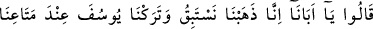
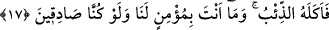
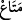

–“Yûsuf’un kardeşleri zâlim oldukları halde ağlayarak gelmişlerdi. Bize düşen, ancak
sünnette nasıl kadılık yapmamız emredildiyse ona uygun olarak kadılık yapmaktır.
Mesnevî’de şöyle der:
Susuz ve âciz kimsenin ağlayışı mânevîdir, doğrudur.
Soğuk soğuk ağlayışsa o azgının yalanından ibârettir.
Yûsuf ’un kardeşlerinin ağlamaları hîleden ibârettir.
Çünkü içleri hasedle, illetle doludur.
Rivâyete göre Yâkub (a.s.) çocuklarının seslerini duyunca, korktu ve şöyle dedi:
–“Size ne oldu böyle, koyunlarınızla ilgili olarak başınıza bir musibet mi geldi?!”
Çocuklar:
–“İş bundan da büyük.” diye cevap verince
–“Peki ne oldu, Yûsuf nerede?!” diye sordu. Onlar da şöyle cevap verdiler:
17. “Ey babamız! Biz yarışmak üzere gittik. Yûsuf’u da eşyâmızın yanında
bırakmıştık. Onu kurt yemiş! Ama biz doğru söylesek de sen bize inanmazsın!”
dediler.
“Ey babamız! Biz” koşu veya ok atmada “yarışmak üzere gittik. Yûsuf ’u da
eşyâmızın” yani istifade ettiğimiz elbise, yiyecek, içecek gibi şeylerin “yanında
bırakmıştık.”
Lügatte kendisinden yararlanılan her şeye “  ” denir. Ancak esas itibariyle şu
andaki yararlanma  sayılır. Yalnız bu sûrenin 65. âyetinde gelecek olan “metâ”dan
sayılır. Yalnız bu sûrenin 65. âyetinde gelecek olan “metâ”dan
maksad yemek kaplarıdır.
Eşyâmızın yanında bıraktıktan hemen sonra, normal olarak gelip kontrol
edebileceğimiz kadar bir vakit geçmeden “onu kurt yemiş. Ama biz” sana göre, senin
inancına göre “doğru söylesek de” doğruluk ve güvenilirlik vasıflarıyla muttasıf
bulunsak da “sen” Yûsuf’a karşı aşırı sevginden dolayı “bize inanmazsın!” dediler.”
Söylediklerimizin doğruluğunu kabul etmezsin! Ama zaten sözümüze güvenmeyen, bize
karşı kötü zan besleyen biri olduğuna göre, hiç inanmayacaksın demektir.”
Sıdk/doğruluk: Bir şeyi, nasılsa o şekilde haber vermek demektir. Kizb/yalan ise bir
şeyi olduğu şeklin dışında göstermektir. “Dil ile tasdik” demek, söyleyen kişinin doğru
olduğunu bildirmek demektir. “Kalb ile tasdik” ise bunu anlayıp kabul etmek
mânâsınadır. Kalb ile tekzîb ise bunun zıddıdır.